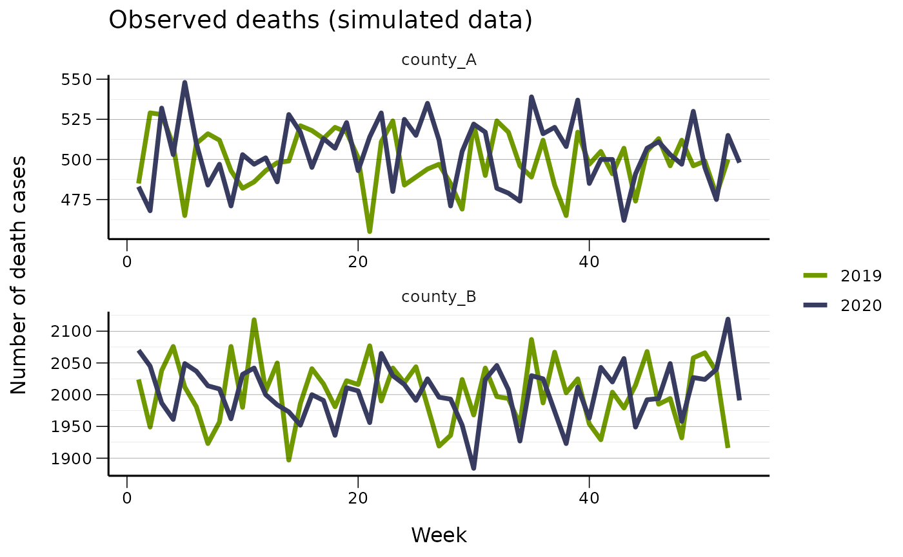
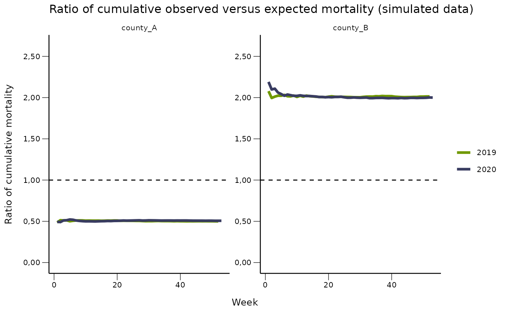
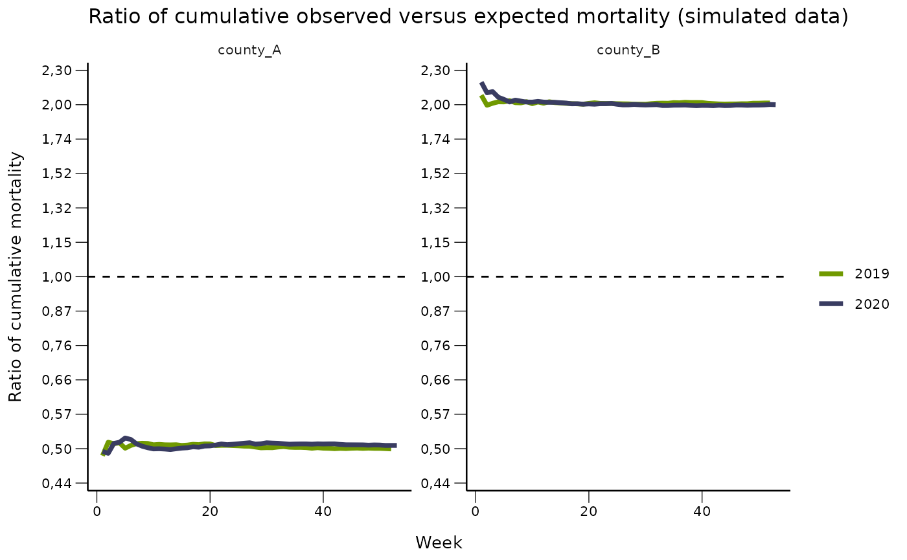

Sometimes a visualisation is easier to read when using log2, log10 or log scale instead of the original scale, especially when the values are very large or skewed. However the y-axis labels will also be converted to the log scales. The functions here are developed for converting back to the original scale for readability.
The following options are included in fhiplot package:
format_nor_invlog2_1, format_nor_invlog2_2
format_nor_invlog10_1, format_nor_invlog10_2
format_nor_invloge_1, format_nor_invloge_2
For instance, if you have plotted \(y = log2(x)\), format_nor_invlog2_1 formats the numerical values \(y\) on the y-axis by transforming \(x = 2^y\), then it keeps 1 digit after decimal point.
library(ggplot2)
library(fhiplot)
#> fhiplot 2021.6.29 https://folkehelseinstituttet.github.io/fhiplot
library(magrittr)We simulate some fictional data for demonstration. We simulate 2-year weekly data of mortality cases in two locations, county A and county B. The count of cases follow the Poisson distribution with different \(\lambda\). For county A \(\lambda_{observed} = 1000, \lambda_{expected} = 500\). For county B \(\lambda_{observed} = 1000, \lambda_{expected} = 2000\).
yrwk_19_20 <- fhidata::world_dates_isoyearweek[year %in% c(2019, 2020),
.(year, yrwk)]
simulate_case <- function(yrwk_df, lambda_expected, lambda_observed, location_code){
nweeks <- nrow(yrwk_df)
n_observed <- rpois(nweeks, lambda_observed)
n_expected <- rpois(nweeks, lambda_expected)
df <- data.frame(deaths_n_observed = n_observed,
deaths_n_expected = n_expected,
location_code = location_code)
df <- cbind(yrwk_df, df)
return(df)
}
set.seed(1)
df_loc1 <- simulate_case(yrwk_df = yrwk_19_20,
lambda_expected = 1000,
lambda_observed = 500,
location_code = "county_A")
df_loc2 <- simulate_case(yrwk_df = yrwk_19_20,
lambda_expected = 1000,
lambda_observed = 2000,
location_code = "county_B")
dd <- rbind(df_loc1, df_loc2)
dd
#> year yrwk deaths_n_observed deaths_n_expected location_code
#> 1: 2019 2019-01 485 998 county_A
#> 2: 2019 2019-02 529 978 county_A
#> 3: 2019 2019-03 528 1047 county_A
#> 4: 2019 2019-04 509 984 county_A
#> 5: 2019 2019-05 465 1016 county_A
#> ---
#> 206: 2020 2020-49 2027 980 county_B
#> 207: 2020 2020-50 2024 1007 county_B
#> 208: 2020 2020-51 2040 986 county_B
#> 209: 2020 2020-52 2119 972 county_B
#> 210: 2020 2020-53 1991 1037 county_BFirst we visualise the fictional observed death over 2 years.
# separate the yrwk string to produce week id
dd$week <- fhiplot::isoyearweek_to_week_n(dd$yrwk)
dd$year <- as.factor(dd$year)
# plot cases
q <- ggplot(dd, aes(x = week, y = deaths_n_observed, color = year))
q <- q + geom_line(lwd = 1.3)
q <- q + facet_wrap(~ location_code, nrow = 2, scale = 'free')
# use fhi themes
q <- q + fhiplot::theme_fhi_basic(10)
q <- q + fhiplot::scale_color_fhi("", palette = "primary", direction = -1)
q <- q + fhiplot::theme_fhi_lines_horizontal()
q <- q + guides(color = guide_legend(reverse = FALSE))
q <- q + labs(title = "Observed deaths (simulated data)",
x = "Week",
y = "Number of death cases")
q
We can compute the cumulative excess mortality per year, as well as the ratio of cumulative observed deaths and expected deaths for each location, each year.
# compute excess and ratio by year
dd[, cum_excess := cumsum(deaths_n_observed - deaths_n_expected),
by = list(location_code, year)]
dd[, cum_excess_ratio := cumsum(deaths_n_observed)/cumsum(deaths_n_expected),
by = list(location_code, year)]
dd
#> year yrwk deaths_n_observed deaths_n_expected location_code week
#> 1: 2019 2019-01 485 998 county_A 1
#> 2: 2019 2019-02 529 978 county_A 2
#> 3: 2019 2019-03 528 1047 county_A 3
#> 4: 2019 2019-04 509 984 county_A 4
#> 5: 2019 2019-05 465 1016 county_A 5
#> ---
#> 206: 2020 2020-49 2027 980 county_B 49
#> 207: 2020 2020-50 2024 1007 county_B 50
#> 208: 2020 2020-51 2040 986 county_B 51
#> 209: 2020 2020-52 2119 972 county_B 52
#> 210: 2020 2020-53 1991 1037 county_B 53
#> cum_excess cum_excess_ratio
#> 1: -513 0.4859719
#> 2: -962 0.5131579
#> 3: -1481 0.5100893
#> 4: -1956 0.5118543
#> 5: -2507 0.5008959
#> ---
#> 206: 48914 1.9966990
#> 207: 49931 1.9969650
#> 208: 50985 1.9983552
#> 209: 52132 2.0017486
#> 210: 53086 2.0001507We plot the ratio on the original scale. Need to format the y-axis using format_nor_num_2 for 2 digits.
max_val <- max(abs(dd$cum_excess_ratio))
q <- ggplot(dd, aes(x=week, y=cum_excess_ratio, color = year))
q <- q + geom_line(lwd = 1.3)
q <- q + geom_hline(yintercept = 1, lty = 2)
q <- q + facet_wrap(~ location_code, nrow = 1, scale = 'free')
q <- q + fhiplot::theme_fhi_basic(10)
q <- q + fhiplot::scale_color_fhi("", palette = "primary", direction = -1)
q <- q + guides(color = guide_legend(reverse = FALSE))
q <- q + scale_y_continuous(breaks = fhiplot::pretty_breaks(8),
labels = format_nor_num_2,
lim = c(0, max_val*1.2))
q <- q + labs(title = "Ratio of cumulative observed versus expected mortality (simulated data)",
x = "Week",
y = "Ratio of cumulative mortality")
q
Now we can plot on the log-2 scale by taking y = log2(cum_excess_ratio), while still keeping the y-axis to the original scale. In this way the visual distance between the ratio and 1 are the same even though the actual distances are \(0.5 (|0.5-1|)\) and \(1 (|2-1|)\) respectively.
max_val <- max(abs(log2(dd$cum_excess_ratio)))
q <- ggplot(dd, aes(x=week, y=log2(cum_excess_ratio), color = year))
q <- q + geom_line(lwd = 1.3)
q <- q + geom_hline(yintercept = 0, lty = 2)
q <- q + facet_wrap(~ location_code, scale = 'free')
q <- q + fhiplot::theme_fhi_basic(10)
q <- q + fhiplot::scale_color_fhi("", palette = "primary", direction = -1)
q <- q + guides(color = guide_legend(reverse = FALSE))
q <- q + scale_y_continuous(breaks = fhiplot::pretty_breaks(9),
labels = format_nor_invlog2_2,
lim = c(-max_val, max_val))
q <- q + labs(title = "Ratio of cumulative observed versus expected mortality (simulated data)",
x = "Week",
y = "Ratio of cumulative mortality")
q